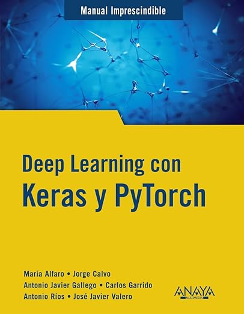

Carlos Garrido
I'm a 2nd year PhD student in Computer Vision and Document Analysis at the University of Alicante (Spain). My research focuses on Out-of-Distribution (OOD) generalization and Handwritten Text Recognition (HTR).
Publications
Loading publications...
Book(s)

Deep Learning con Keras y PyTorch
This book provides a comprehensive introduction to deep learning using Keras and PyTorch. It covers fundamental concepts, practical applications, and real-world examples, making it an essential manual for students and professionals interested in artificial intelligence and machine learning.
View on Amazon